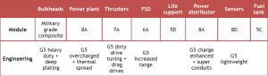
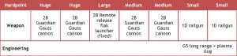
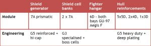
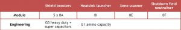
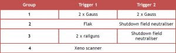
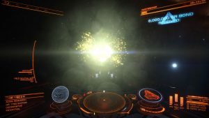

Defeating the Basilisk Variant – Written by CMDR Jon Burnage
Many Commanders who have successfully killed a Cyclops-class Thargoid interceptor have trouble initially when taking on the Basilisk Variant. This guide described the differences between the two and how best to approach a Basilisk fight. I have also detailed a suggested ship build for the Corvette, which can be used as a basis for other large ship builds.
The Basilisk-class Thargoid interceptor is a considerably tougher opponent than the Cyclops, and requires a different approach. The main differences are:
The combination of 4 and 5 make for a particular challenge, because the window of opportunity to attack is smaller, and the interceptor can regenerate health rapidly outside of you weapons’ effective range.
I fly the Corvette for Thargoid combat; here is my build. The principle behind it can be applied to other ships.
Core Internals:

Thermal spread helps manage the heat from the Gauss cannons. The build is very tight on power, and requires both the cargo hatch and FSD to power down when the hardpoints are deployed. Remember that your FSD takes 10 seconds to boot from cold if you need to get away in a hurry.
Weapons:

The Gauss cannon is the best of all the AX weapons. Not only does it have the best DPS against Thargoids, but it is also hitscan, making it ideal for sniping exerted hearts. Note that he Medium hard-points on the Corvette do not converge enough to hit a heart; use all four to exert, but only the pair on the Huge mounts to kill hearts.
The rail-guns are useful for chipping away at the the pop-up shield. You will get through a lot of ammunition doing this, hence the plasma slug experimental effect. They can achieve a range of 6km, which is double that of the interceptors main weapon; this helps with bringing down the shield whilst avoiding damage yourself.
Optional internals:

This configuration gives ~6200MJ shield strength, with ~7100MJ reserves in the SCBs. Total hull integrity is ~7300. Note that I have not fitted any module reinforcement; if you are not confident that you will keep your shields up for the fight, bring one or two.
Utilities:

The heat-sink launcher is used for both double-banking with SCBs, and for negating the heat from the four Gauss cannons. The xeno scanner is not strictly needed; I prefer to have it, but it can be substituted for an additional shield booster (note that this will require the Monstered special effect to be applied to the power plant, which will adversely impact heat management).
Fire Groups:

Group 4 is a temporary group that I delete after the scan is complete
Group 1 has the upper (Huge hard-point) pair mapped to trigger 1, and the forward (Medium hard-point) pair mapped to trigger 2; this gives the option to fire all 4 Gauss cannons together to exert a heart, or just the upper pair to destroy one.
It is a good idea to have the shutdown field neutralizer in as many fire groups as possible, so you can have access to it in a hurry. If you have the 4 groups and put the neutralizer in only one of them, the chances are you’ll have a finger fail and not get to it in time.
This is far from the only way of fighting a Basilisk, but I have found it to be successful and repeatable.
To begin, scan the interceptor, then reverse away at full speed with FA off to make you go faster. As you pass 3.5km from the Thargoid, shoot it with your rail-guns. It will turn hostile and deploy a swarm, which will chase after you. The interceptor will pursue as well, but the swarm gets a significant head-start. This is crucial as you never want to fight the swarm and interceptor simultaneously.
Begin firing at the swarm as soon as it starts to gain on you. The HUD indicates a range of only 3km for the flak cannon, but it is actually effective far beyond this distance. Indeed, the best time to shoot the swarm is when it is far away and coming towards you in a straight line; it does not start weaving until ~3.5km. With good shooting you can destroy them all before they can land more than a handful of shots. The swarm comprises the majority of the Thargoids firepower – always kill it quickly.
Once the swarm is gone, throttle up and engage the interceptor. Your firing window will be smaller than the Cyclops because the Basilisk will move away faster; it may take some time to learn its pattern of movement. Once you have maneuvered into a good firing position, fire all four Gauss cannons simultaneously and continuously, using a heat-sink to avoid self-immolation. This will exert the heart quickly.
After destroying the first heart, get away from the interceptor quickly. I find it best to turn and put it on my six, then boost. The interceptor tries very hard to use it lightning attack at this time, which it signifies by glowing yellow. It will persist for a long time – to counter this, deploy an SLF immediately once you have evaded and order it to attack the interceptor. This will distract it, and cause it to expend its lightning attack against your fighter.
Whilst you fighter is engaging the interceptor, pull back to ~6km, but stay within sensor range. A new swarm will deploy and most likely obliterate your fighter in short order. When it is destroyed, immediately toggle FA off and reverse away at full speed. It is imperative that you are within sensor range when the fighter dies. If you are too far away, the swarm will stay put and the interceptor will come for you first, followed by the swarm when the interceptor sees you. The swarm is faster, so both will catch you around the same time, which is the worst possible situation.
As soon as the swarm starts chasing you, begin firing flak. Destroy them quickly as before, and throttle up in plenty of time, before the interceptor arrives (3km away is my rule of thumb); if it catches you in reverse you will not be escaping the lightning attack. At this time the interceptor’s shields are probably still up; deploy another SLF and order it to attack. Without the swarm it will last much longer. Pull back to 5-6km and chip in with your rail-guns, but be sure the interceptor stays focused on the fighter. The pop-up shield will probably outlast your fighter, so use your rail-guns to finish it off. you can boost-joust the interceptor at this point – your rail-guns have double the range of its main weapon, so you can deplete the shield whilst avoiding damage yourself. Once the shield fails, slow down and re-engage with the Gauss cannons.
After the second and subsequent hearts are destroyed, the interceptor is not nearly as persistent with the lightning as it is after the first heart. Provided you get away from it quickly, it will not chase you immediately. Boost away, deploy a fighter but order it to maintain formation. Stop yourself at 5-6km (it is easy to travel further at this point if you are not careful) and fire at the interceptor with your rail-guns to deplete the shields. Remember to stay within sensor range so the next swarm chases you before the interceptor.
When the next swarm deploys, toggle FA off and reverse as fast as you can, firing flak as you go. As before, the swarm will catch you faster than the interceptor, enabling you to kill it first before you have to engage the interceptor again. Do not order your fighter to attack, or the swarm will immediately focus it. this will make the swarm almost impossible to kill, and your fighter will die quickly for no benefit. Once the swarm is gone, order the fighter to attack the interceptor. Use the time when its distracted to synthesis more flak ammunition and heat-sinks as required. Deploy the second fighter when the first dies, to continue to wear down the pop-up shield whilst avoiding damage yourself. Finish off the shields if need be, and then move onto the next heart. Repeat until all hearts are destroyed, eliminate the final swarm and deliver the killing blow.
